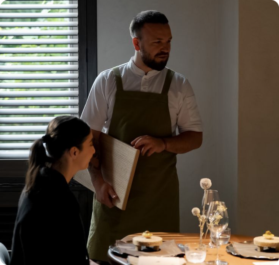
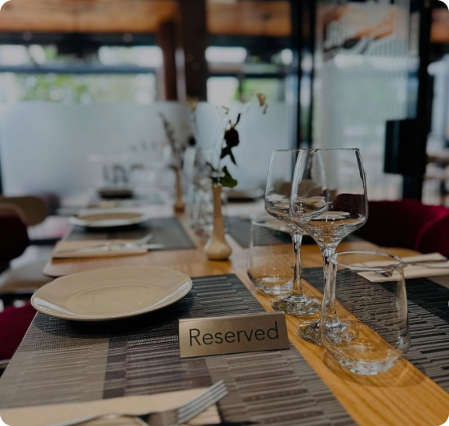
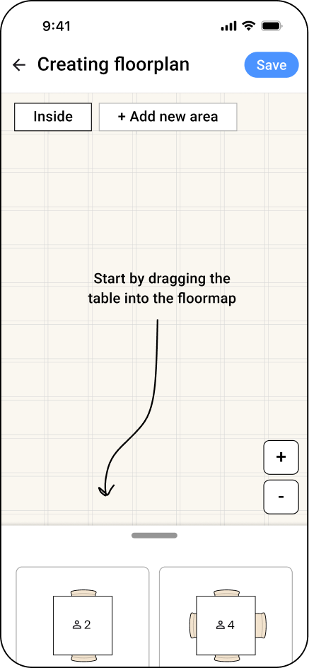

Restaurant management system: live queue and interactive floor plan
We designed a web service for European restaurants with high guest traffic. The product enables table reservations and live queue management — guests receive a notification when their table is ready and can comfortably walk around while waiting.
My contribution: end-to-end UI design, interactive floor plan design, prototyping, and usability testing.
The staff didn’t have visibility into what was happening in the dining area without leaving it
In busy restaurants, staff couldn’t quickly understand the real-time state of the floor: which tables were occupied, which had been moved, and whether any seats were available. The only way to know was to physically walk through the dining area. This slowed down operations and led to booking errors.
Competitors handle reservations, but not visualization
We analyzed existing restaurant management solutions. The key insight: most systems focus on reservation lists and queues but don’t provide staff with a real-time visual understanding of the floor. This feature is new to the industry, which meant there were no established patterns to rely on.


How can we represent the floor in a way that works for everyone?
We explored different approaches to visualizing table status. The main challenge was to make the interface instantly readable without adding unnecessary cognitive load.

Manually adding tables from a library (Very time-consuming and complex, requiring significant setup effort)
We created an interactive floor plan with the real-time status of each table. Staff can grasp the full picture at a glance — without walking through the dining area. The layout accounts for non-standard configurations, such as merged tables and changes in seating capacity.
Add a prominent banner that allows users to create a floor plan from a building layout. All they need to do is upload an image (restaurants always have a fire safety plan) — even a hand-drawn sketch will work.
The convenience is that most restaurants already have a floor plan for fire safety. Alternatively, a hand-drawn layout works too — our AI tests showed it can accurately interpret a wide range of plans.


Simplicity vs. functionality is a constant balancing act.
The floor plan had to be flexible enough to handle real-world, non-standard configurations, yet simple enough for staff to use without training. Every added feature was carefully validated for necessity.
Testing with real users changes everything.
Restaurant staff work under constant pressure and time constraints. Usability tests with real staff revealed patterns that are impossible to predict during the design phase.
Made together with Anton Stupnev and the team at N2M.